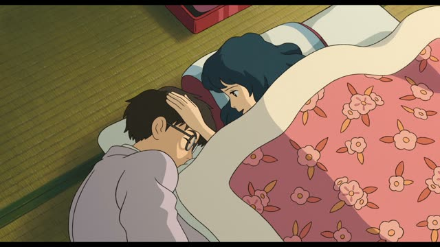
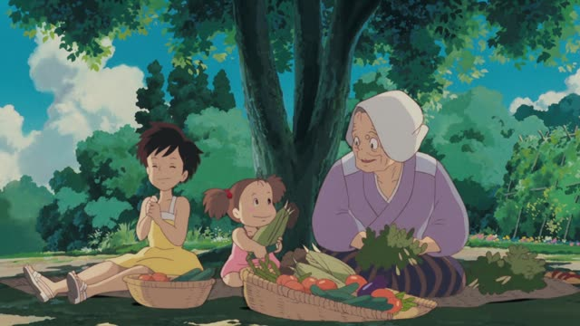
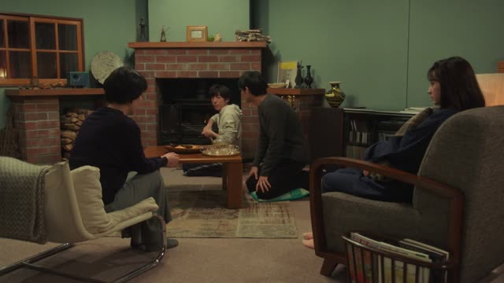
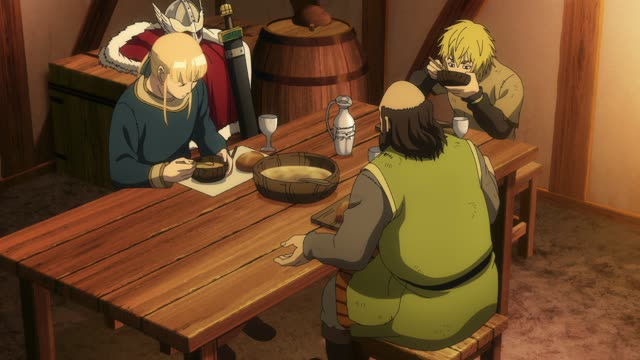
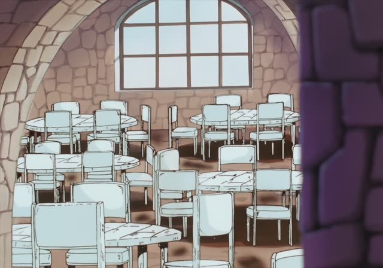
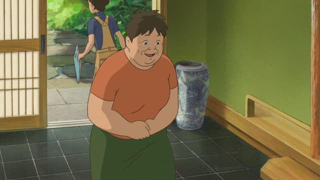
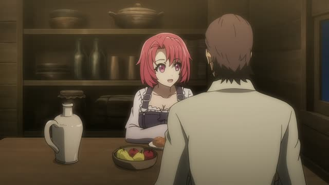
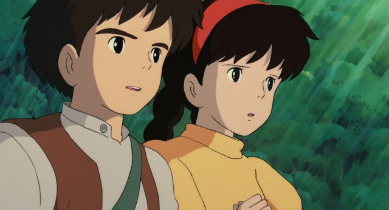

きっと

The Wind Rises
きっとちゃんと飛びますよ。
"I'm sure it'll fly just fine."
きっと means "surely, I bet": you strongly believe something will happen or is true, even though you can't know for certain. It usually goes near the start of the sentence.
On this card, Nahoko tells Jiro his plane will fly. She can't know that, but she believes it. The polite ます form makes it polite.
It's stronger than たぶん (probably), and warm: you often use it to encourage someone.

My Neighbor Totoro
おかあさん、きっと喜ぶよ。
"Your mom will definitely be happy." [about the corn Mei picked]
On this card, Granny tells Mei her mom will love the corn she picked. きっと + よ: confident and kind.
Quick Examples
Your friend is nervous before an exam.
きっと大丈夫だよ。
"You'll be fine, I'm sure."
The classic way to cheer someone up.
CasualA coworker hasn't come in today.
きっと風邪ですね。
"I bet it's a cold."
A strong guess about now.
PoliteYour friend lost her keys.
きっとどこかにあるよ。
"They're bound to be somewhere."
CasualYour boss asks if the client will agree.
きっと分かってくれると思います。
"I'm sure they'll understand."
きっと often goes with と思う.
PoliteWith and without
明日は晴れる。
"Tomorrow will be sunny." Said like a fact.
きっと明日は晴れる。
"I bet tomorrow will be sunny." You strongly believe it.
Examples from Media

Quartet · Episode 9
きっと何かの間違いですよ。
"It must be some kind of mistake."
Comforting someone who just got bad news.

Vinland Saga · Episode 15
きっと喜んでくださいます。
"He'll surely be pleased."
About the king, so the respectful くださいます.

Oishinbo · Episode 38
きっとあなたを必要とする時がきます。
"The time will surely come when he needs you."
Said to a mother about her son.
Death Note · Episode 7
きっとキラは捕まりますよね。
"Kira will surely be caught, won't he."
きっと + よね: sure, but asking you to agree.

When Marnie Was There
きっと似合うわ。
"I'm sure it'll suit you."
Anna answers: 似合うわけないじゃない, "no way it suits me".

Goblin Slayer · Episode 8
きっと事情があるんだよ。
"He must have his reasons."
Guessing why Goblin Slayer keeps going far away.

Castle in the Sky
きっと園丁のロボットなんだ。
"It must be a gardener robot."
Pazu guesses from what the robot is doing.
Porco Rosso
お母さんが聞いたら、きっと泣くわ！
"If your mothers heard this, they'd surely cry!"
Fio scolds the pilots.